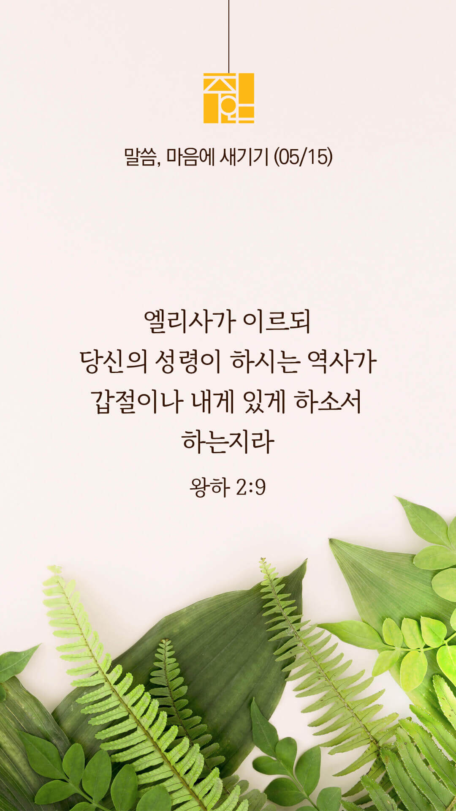

기도실 안내
2022년 05월 15일 (주일)
- 온라인 기도실은 온 회중이 함께 주님 앞으로 나아가는 자리입니다
- 30분 정도 여유를 가지고 하시기 바랍니다
- 말씀과 묵상, 찬양과 기도로 나아갑니다
- 배경 음악이 나올 수 있습니다 볼륨을 조절해주세요
준비가 되셨으면 아래의 버튼을 눌러주세요
할렐루야
내 영혼아 여호와를 찬양하라
시 146:1
- 가사를 묵상하며 읽습니다
십자가 그 사랑
십자가 그 사랑 멀리 떠나서
무너진 나의 삶 속에 잊혀진 주의 은혜
돌같은 내마음 어루만지사
다시 일으켜 세우실 주를 사랑합니다.
지나간 일들을 기억하지 않고
이전의 행한 모든 일 생각지 않으리
할렐루야
내 영혼아 여호와를 찬양하라
시 146:1
- 가사를 묵상하며 읽습니다
사막의 강물과 길을 내시는 주
내안의 새 일 행하실 주만 바라보리라
주 나를 보호하시고 날 붙드시리
나는 보배롭고 존귀한 주님의 자녀라
주 너를 보호하시고 널 붙드시리
너는 보배롭고 존귀한 주의 자녀라
할렐루야
내 영혼아 여호와를 찬양하라
시 146:1
십자가 그 사랑 by 노래해주리
위의 찬양이 끝나면 말씀읽기를 눌러주시면 됩니다
주의 말씀은 내 발에 등이요
내 길에 빛이니이다 (시119:105)
오늘의 말씀입니다
음악 소리가 크면 조절하시기 바랍니다

마음의 묵상
왕하 2:9
“건너매 엘리야가 엘리사에게 이르되 나를 네게서 데려감을 당하기 전에 내가 네게 어떻게 할지를 구하라 엘리사가 이르되 당신의 성령이 하시는 역사가 갑절이나 내게 있게 하소서 하는지라”
1. 엘리사가 엘리야에게 구한 내용은 무엇인가요?
2. 당신이 하나님께 한 가지를 구할 수 있다면 어떤 것을 구하시겠습니까?
3. 그 간절한 간구의 제목을 가지고 이 시간 잠시 기도합시다
구하라 그리하면 너희에게 주실 것이요(마 7:7)
회개, 삶의 방향을 바꾸는 결정
주님께서 찾으시는 그 한 사람이 되길 소망합니다
“여호와께서 이르시되
내가 만일 소돔 성읍 가운데에서
의인 오십 명을 찾으면
그들을 위하여 온 지역을 용서하리라”
- 창세기 18:26 -
3분 정도 회개하며 주님 앞에 나아갑니다
사슴이 시냇물을 찾기에 갈급함 같이
시 42:1
- 다음의 말씀을 소리 내어 읽습니다
[창세기 18:27-33]
27 아브라함이 대답하여 이르되 나는 티끌이나 재와 같사오나 감히 주께 아뢰나이다
28 오십 의인 중에 오 명이 부족하다면 그 오 명이 부족함으로 말미암아 온 성읍을 멸하시리이까 이르시되 내가 거기서 사십오 명을 찾으면 멸하지 아니하리라
29 아브라함이 또 아뢰어 이르되 거기서 사십 명을 찾으시면 어찌 하려 하시나이까 이르시되 사십 명으로 말미암아 멸하지 아니하리라
사슴이 시냇물을 찾기에 갈급함 같이
시 42:1
- 다음의 말씀을 소리 내어 읽습니다
[창세기 18:27-33]
30 아브라함이 이르되 내 주여 노하지 마시옵고 말씀하게 하옵소서 거기서 삼십 명을 찾으시면 어찌 하려 하시나이까 이르시되 내가 거기서 삼십 명을 찾으면 그리하지 아니하리라
31 아브라함이 또 이르되 내가 감히 내 주께 아뢰나이다 거기서 이십 명을 찾으시면 어찌 하려 하시나이까 이르시되 내가 이십 명으로 말미암아 그리하지 아니하리라
사슴이 시냇물을 찾기에 갈급함 같이
시 42:1
- 다음의 말씀을 소리 내어 읽습니다
[창세기 18:27-33]
32 아브라함이 또 이르되 주는 노하지 마옵소서 내가 이번만 더 아뢰리이다 거기서 십 명을 찾으시면 어찌 하려 하시나이까
33 이르시되 내가 십 명으로 말미암아 멸하지 아니하리라 여호와께서 아브라함과 말씀을 마치시고 가시니 아브라함도 자기 곳으로 돌아갔더라
하나님 나라
1. 하나님의 나라가 속히 이 땅에 임하게 하소서
하나님 아버지,
우크라이나를 비롯한 전 세계(아프리카, 남미, 아시아, 동유럽 등 약 26곳) 곳곳에서 일어나고 있는 분쟁과 전쟁이 속히 그치게 하시고, 그 땅 가운데 하나님의 평강이 임하게 하소서. 고향을 떠나 방황하는 난민들에게 살 길을 열어주시고, 지역 교회와 선교지에서 그들을 섬겨 하나님의 사랑과 복음을 전하게 하소서.
간절한 마음으로 3분 정도 기도합시다
남과 북
2. 남북한이 속히 복음으로 통일되게 하소서
하나님 아버지,
북한이 핵무기를 포기하고 대화의 장으로 나오게 하소서. 그리하여 닫힌 문이 열려 북한 주민들에게 필요한 국제사회의 도움의 손길이 임하게 하소서. 지금도 핍박 받고 있는 지하 교회 성도들에게 성령으로 충만케 하사 끝까지 믿음을 지키고 한 알의 밀알이 되어 그 땅 가운데 복음이 전파되게 하소서.
간절한 마음으로 3분 정도 기도합시다
대한민국
3. 우리나라가 하나님을 경외하는 나라가 되게 하소서
하나님 아버지,
새롭게 시작하는 정부와 지도자들에게 하나님을 경외하는 마음과 지혜와 능력을 주소서. 그리하여 국민들을 위한 좋은 정책이 세워지게 하시고, 이념, 세대, 지역, 진영, 성별로 나누어진 국민들의 마음이 하나가 되며, 상처받은 국민들의 마음을 치유하여 주소서.
간절한 마음으로 3분 정도 기도합시다
다음 세대
4. 한국교회가 성령으로 새롭게 부흥되게 하소서
하나님 아버지,
한국교회의 성도들이 하나가 되게 하소서. 성도들이 다시 교회에 모여 하나님을 예배하게 하시고, 서로 사랑하며 섬기며 주님의 몸된 공동체를 이루어가게 하소서. 함께 모여 간절히 기도하는 한국교회가 되게 하시고, 다음 세대에 신앙의 유산을 계승하는 교회가 되게 하소서.
간절한 마음으로 3분 정도 기도합시다
주안교회
5. 주안교회가 선교적 삶으로 복음의 빛을 비추는 교회가 되게 하소서
하나님 아버지,
오늘도 잃어버린 영혼들을 찾으시고 구원하시는 하나님 아버지, 바라옵기는 이제 이후로 잃어버린 영혼들을 향한 주안의 모든 성도들의 발걸음을 통하여 우리 주변의 수 많은 잃어버린 영혼들이 사망의 음침한 골짜기에서 벗어나 하나님 나라의 기쁨의 잔치에 동참하게 되는 놀라운 구원의 역사가 이루어지게 하옵소서.
간절한 마음으로 3분 정도 기도합시다
감사의 기도
- 오늘 기도를 인도하신 주님께 감사를 올려드립니다
- 아래의 구절을 읽고 주님께 감사의 마음을 올려드립시다
“우리는 주의 백성이요
주의 목장의 양이니
우리는 영원히 주께 감사하며
주의 영예를 대대에 전하리이다”
- 시편 79장 13절 -
고요한 가운데 잠시 침묵하시기 바랍니다
파송, 세상을 향하여
- 오늘의 온라인 기도를 마쳤습니다
기도를 들으신 주님께서 평안히 가라 하십니다
주님께서 우리와 함께 하시니 두려울 것이 없습니다
새벽을 깨우며
- 새벽기도회 안내입니다